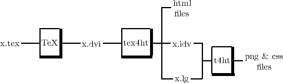

The system can be activated with a sequence of commands of the following form, typically embedded within
a script.
latex x (or ‘tex x’) latex x latex x tex4ht x t4ht x
The three compilations with La(TeX) are needed to ensure proper links. The approach is illustrated in the
following picture.

x.tex
This is a source TeX/LaTeX/OtherTeX file that imports the style files tex4ht.sty and *.4ht. The style files
define the features for the output.
tex4ht
The output of TeX is a standard dvi file interleaved with special instructions for the postprocessor tex4ht to
use. The special instructions come from implicit and explicit requests made in the source file through commands of
TeX4ht.
The utility tex4ht translates the dvi code into standard text, while obeying the requests it gets from the
special instructions. The special instructions may request the creation of files, insertion of html code, filtering of
pictures, and so forth.
In the extreme case that the source code contains no commands of TeX4ht, tex4ht gets pure dvi code and it
outputs (almost) plain text with no hypertext elements in it.
The special (\special) instructions seeded in the dvi code are not understood by dvi processors other than
those of TeX4ht.
x.idv
This is a dvi file extracted from x.dvi, and it contains the pictures needed in the html files.
x.lg
This is a log file listing the pictures of x.idv, the png files that should be created, CSS information, and user
directives introduced through the ‘\Needs{...}’ command.
t4ht
This is an interpreter for executing the requests made in the x.lg script.
A Reflection at the System Messages
This is TeX, Version 3.14159 (Web2C 7.3.1)⇐ invoke ‘latex x’ LaTeX2e <1998/12/01> patch level 1 Babel <v3.6x> and hyphenation patterns for american, french, german, ngerman, n ohyphenation, loaded. (x.tex (/usr/share/texmf/tex/latex/base/article.cls Document Class: article 1999/01/07 v1.4a Standard LaTeX document class (/usr/share/texmf/tex/latex/base/size10.clo)) (n/tex4ht.dir/tex4ht.sty) (n/tex4ht.dir/tex4ht.sty --- needs --- tex4ht x --- (tex4ht.tmp) (x.xref) (n/tex4ht.dir/html4.4ht) (n/tex4ht.dir/picmath4.4ht) (n/tex4ht.dir/latex.4ht (n/tex4ht.dir/html4.4ht) (n/tex4ht.dir/picmath4.4ht)) (n/tex4ht.dir/fontmath.4ht (n/tex4ht.dir/html4.4ht) (n/tex4ht.dir/picmath4.4ht)) (n/tex4ht.dir/article.4ht (n/tex4ht.dir/html4.4ht ) (n/tex4ht.dir/picmath4.4ht))) (x.aux) --- file x.css --- [1] (x.aux) ) Output written on x.dvi (1 page, 4460 bytes). Transcript written on x.log. This is TeX, Version 3.14159 (Web2C 7.3.1)⇐ invoke ‘latex x’ LaTeX2e <1998/12/01> patch level 1 ....................... This is TeX, Version 3.14159 (Web2C 7.3.1)⇐ invoke ‘latex x’ LaTeX2e <1998/12/01> patch level 1 ....................... tex4ht.c (1999-11-10-03-50)⇐ invoke ‘tex4ht x’ (tex4ht.env) (n/tex4ht.dir/tex4ht.fls) (/usr/share/texmf/fonts/tfm/public/cm/cmr10.tfm) (n/tex4ht.dir/ht-fonts/iso8859/cm/cmr.htf) [1 file x.html file x.css file tex4ht.tmp ] Execute script ‘x.lg’ t4ht.c (1999-12-30-21-14)⇐ invoke ‘t4ht x’ Entering tex4ht.env Entering x.lg .......................
G
M
T
Text-to-speech function is limited to 100 characters